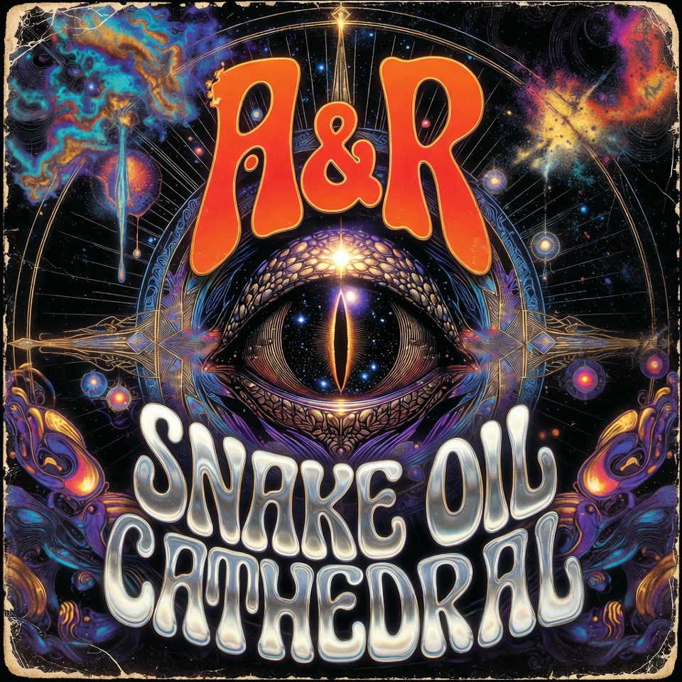

SNAKE OIL CATHEDRAL
LP · 10 Tracks · 43 min · 2025
Recorded live to 2-inch tape in a decommissioned church outside Kuna over nine feverish days. Two guitars braided into one enormous drone, The Third Member keeping time — just the room, the crunch, and whatever moved through it. Pressed on translucent “altar red” vinyl.
01 Vulture Choir02 Red Milk03 High Desert Hymn
04 Gasoline Halo05 Snake Oil Cathedral06 Sister Static
07 Copperhead08 Idle Hands Revival09 Dust Communion
10 Amen, Amplifier
2025